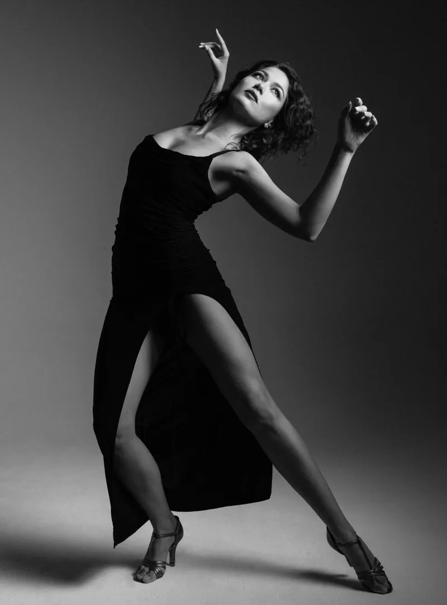
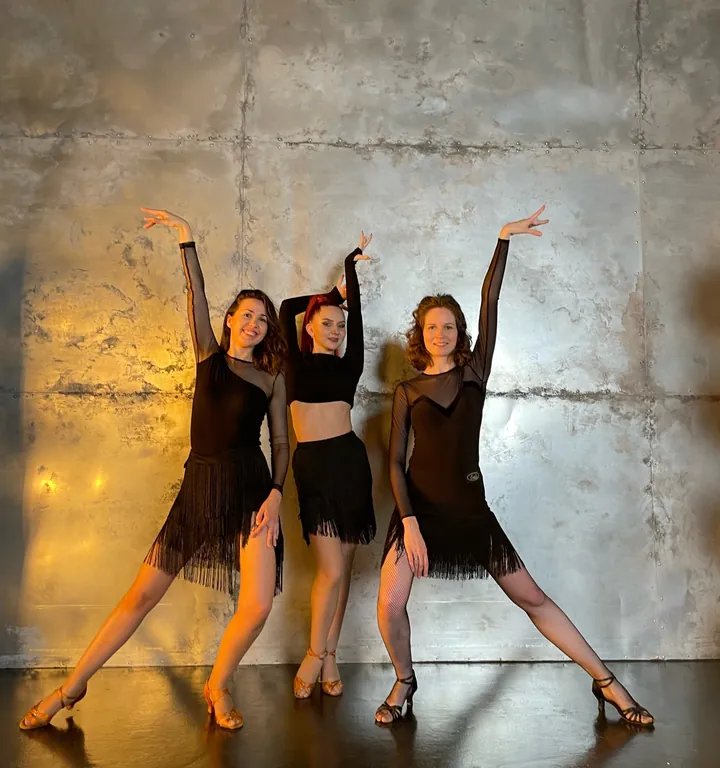
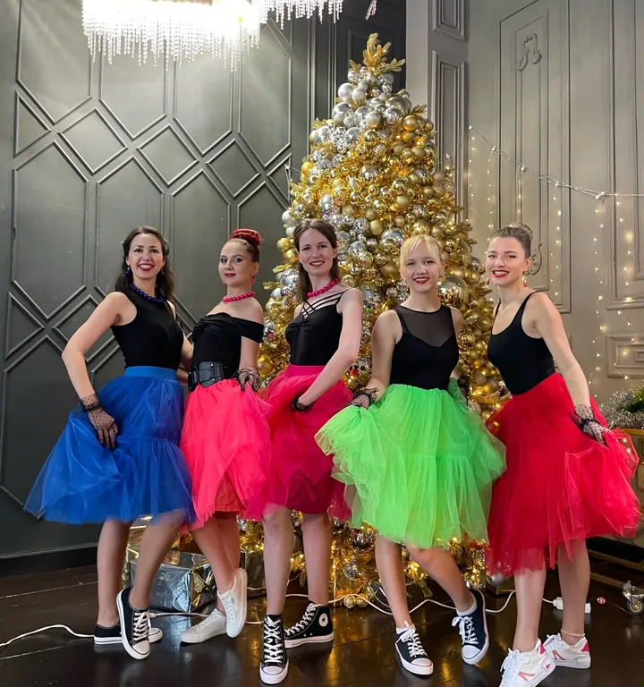
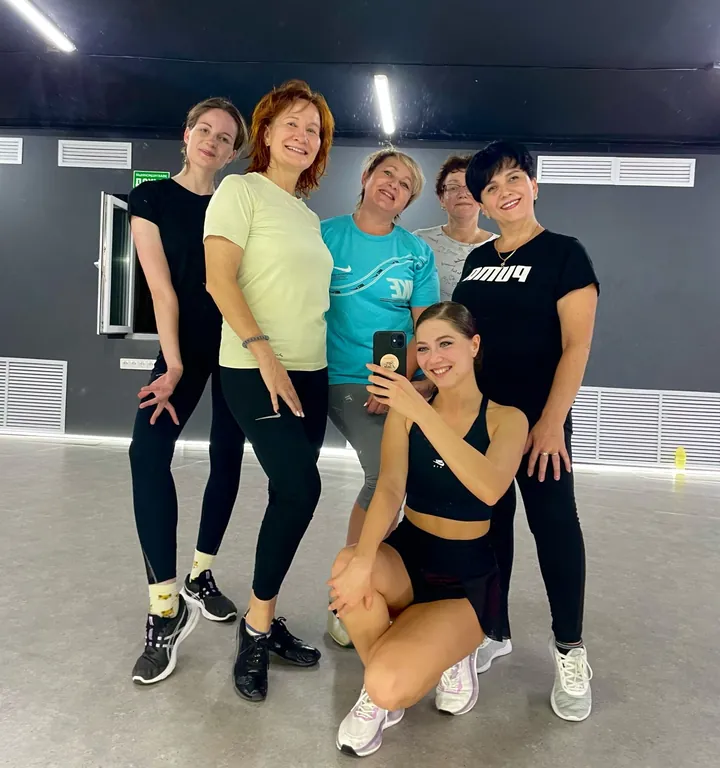

Латина соло
Хочется двигаться красиво и женственно
Латиноамериканские танцы без пары: шаги, вращения, работа бёдер и рук. Учимся чувствовать музыку и своё тело.
Каждый день 10:00–22:00 · Новосибирск
Танцевальное пространство на Красном проспекте. Не знаете, с чего начать? Ответьте на два вопроса, и сайт подберёт направление и ближайшее пробное занятие.
Подбор
Два вопроса, и сразу видно, какое занятие ваше и когда ближайшая группа.
Чего хочется от занятий?
Танцевали раньше?
Направления
Хочется двигаться красиво и женственно
Латиноамериканские танцы без пары: шаги, вращения, работа бёдер и рук. Учимся чувствовать музыку и своё тело.
Хочется зарядиться и пропотеть
Танцевальный фитнес под зажигательную музыку: простые связки, много движения, уходите заряженными.
Хочется растянуться и снять зажимы
Растяжка всего тела в спокойном темпе: гибкость, осанка, мышцы отпускает после рабочего дня.
Описания направлений примерные, в готовой версии будут ваши слова.
Расписание
Дни, время и число мест здесь примерные: полоска показывает, сколько из 12 мест уже занято. Пришлёте своё расписание, поставлю его.
Пробное занятие

Кто ведёт
Основательница танцевального пространства KrisStyle.
[здесь пара строк о вашем опыте, учёбе и выступлениях]
Мы не просто учим движения — мы проживаем их)) И постепенно начинаешь лучше чувствовать музыку, своё тело и сам танец.
Не всегда получается с первого раза, но атмосфера на занятии такая, что стеснения нет. Наоборот, и поддержат и растолкуют
Объясняет понятно, показывает как надо и что важно. Всегда следит за тем чтобы ты делал правильно, а не просто повторял движения.
В раздевалке хохочем, а в зале работаем на результат.
С ней вы научитесь прекрасно танцевать, у вас будет хорошая растяжка, гибкость, а также отличное настроение!!



Фото из карточки KrisStyle в 2ГИС. В готовой версии подберём вместе.
Коротко о главном
Новосибирск, Красный проспект, 200, бизнес-центр «Адриатика», 5 этаж, офис 518. Рядом метро «Заельцовская», около 400 метров.
Каждый день с 10:00 до 22:00. Время групп смотрите в расписании выше.
Да. Для латины есть группа с нуля, зумба и стретчинг подходят с первого занятия. В отзывах пишут, что стеснения на занятиях нет.
Пробное: [цена]. Разовое и абонементы: [цены].
Удобную одежду и воду. На зумбу кроссовки, на латину и стретчинг можно прийти в носках, туфли для латины понадобятся позже.
Да. На занятия к Кристине ходят и мужчины, один из отзывов в 2ГИС как раз от Дмитрия.
Выберите занятие в расписании, оставьте имя и телефон. Накануне придёт напоминание. Или позвоните: +7 903 905-27-02.